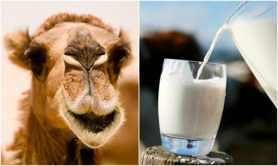

By Ephrayim Baskin | Shavuos 5777 — May 2017
The first camel in Australia was named Harry. He arrived in 1840 as the sole camel survivor of the sea voyage from the Canary Islands[1]. Harry was used by inland explorer John Ainsworth Horrocks, otherwise known as ‘The man who was shot by his own camel’. In 1846, on an expedition into South Australia, Harry bumped into Horrocks while he was reloading his gun, causing him to shoot off his middle finger, left cheek and front row of teeth[2]. Horrocks died a few weeks later, but first requested that Harry be shot as well[3].
Despite Harry’s short Aussie camel cameo, the Australian camel was to become legendairy. In 1860, the Victorian government started importing camels and cameleers from British India and later from British Palestine, for inland expeditions
[4]. By the 1930s, the camel industry was displaced by motor transport. Remaining camels were released into the wild where they were suited to the arid conditions and, with no predators, they became the largest feral camel population in the world
[5]. In 2008, it was estimated that there were more than one million feral camels in the outback, but in 2013, after mass culling and other measures, the population was estimated to be around 300,000
[6].
With such a large camel population, there have been efforts to cultivate the Australian camel. Live camels are exported to Saudi Arabia, UAE, Brunei and Malaysia as a delicacy, or to Arab camel racing stables, or for tourist use in places like the USA. There are also camel abattoirs operating in Australia. Of late, camels have been milked for all their worth with the opening of multiple camel dairies.
Recently, camel milk appeared on a popular TV show and was controversially marketed as a healthier and more nutritional alternative to milk, gaining it a ‘Shonky Award’ in 2016
[7]. Needless to say, other dairy industries are not amoosed. Camel milk is currently sold for $18/L, and other camel milk products such as camel milk powders are already available
[8].
Camel milk is not the only type seeing a resurgence. Other extraordinary mammals are being milked dry, most notably donkeys. In fact, in 2013, tennis star Novak Djokovic (no djoke) bought the entire world supply of donkey cheese (known as pule)[9].

A relevant question for the kosher consumer is that, with the gaining popularity of camel and other non- kosher milk in Western countries, is there a concern that our cow milk is really camelflouged? Will the kosher milk industry get creamed? If not, how big does the camel milk industry have to be for there to be a concern?
A little background is needed.
From the Torah’s perspective, milk is only kosher if it’s from a kosher animal. A couple of thousand years ago, there was an issue in the dairy industry where dairy farmers were adding non-kosher milk into kosher milk. The issue was so big that the Rabbis of the day ruled that, for milk to be deemed kosher, it had to be supervised by an observant Jew. This became known as Cholov Yisroel[10].
Based on this ruling, the increasing non- kosher milk market should be of no concern to Cholov Yisroel milk production, as all batches of milk are supervised to ensure that it only comes from a kosher animal. However, there are two leniencies regarding the ruling of Cholov Yisroel, and for these, the question of milk adulteration becomes more cowculated[11].
The first is that of the Pri Chodosh (YD 115:6). He argued that the original ruling requiring Jewish supervision only applies in a place where it is known that the dairy farmers add non-kosher milk into kosher milk. Accordingly, in a place where there is no non-kosher milk to be had, or even if there is non-kosher milk but it is more expensive than the kosher milk, the ruling doesn’t apply and milk can be bought from any non-Jewish dairy farm.
However, most scholars disputed this approach and maintained that the Cholov Yisroel ruling was a Gzeirah – a decree (Chassam Sofer YD 107). Consequently, even in circumstances where there is no concern of non-kosher milk being added into kosher milk, Jewish supervision is still required for the milk to be kosher. This is the accepted position in most orthodox communities.
The second leniency was that of Reb Moshe Feinstein. He embraced the approach of the Chassam Sofer, but in a series of responses (YD 1:47-49), he argued that in first world countries, we can invoke the concept of “Anan Sahadi”; we are so confident in governmental regulations that it is ‘as if we witnessed’ the milking. Therefore, the milk can be considered Cholov Yisroel. The milk permitted under Reb Moshe’s leniency became known as Cholov Stam or Cholov HaCompanies[12].
Presently, in Australia, those who follow the leniencies of the Pri Chodosh or Reb Moshe can drink unsupervised milk as:
1. Pri-Chodosh: Although there is production of camel milk in most states of Australia, this industry is extremely small (no more than one farm per state). Currently, the cheapest camel milk is about $18/L retail, compared with $1/L for cow milk, so there is no financial incentive to adulterate cow milk. It is extremely unlikely that camel milk will ever be cheaper than cow milk, as a cow can produce 20-50L of milk per day and can continue to produce milk even after weaning their calves. However, camels can produce only 1-12L of milk per day, are extremely hard (and sometimes impossible) to train, and require calve stimulation to continually produce milk[13].
2. Reb Moshe: Australian and New Zealand dairy regulations require cow milk to be only cow milk[14] (unless labelled otherwise). Every dairy farm is also required to have a system in place that enables the tracing of milk to the animal that produced it[15]. The enforcement of these regulations is up to each state. In Victoria, this falls under Dairy Food Safety Victoria (DFSV) who audit all dairy facilities at least once annually to check that all regulations, including the above, are adhered to[16]. They have the ability to penalise and remove licenses of dairy businesses. Thus, even were camel milk to increase in popularity, there is still government supervision in place. Unless regulations were changed so as not to monitor non- kosher milk going into kosher milk, or were not being reliably enforced, Reb Moshe’s leniency would remain.
However, there is another issue that could affect all kosher consumers with increased camel milk production. Besides camel milk, other camel milk products are being made, including ice- cream, powders, chocolate, cheeses and more[13]. It is unlikely there would be a designated factory for camel ice-cream or camel milk powder, and it is more likely that existing dairy factories would process camel milk batches. There would be no regulatory issues as there would be a clean between products, but from a kosher perspective, such a clean is unlikely to be on par with a kashering. If camel milk were to become much more popular, it is likely that it would have an effect on otherwise kosher products made on the same lines. Kosher agencies would then have to investigate to ensure that even plain market milk factories do not process camel milk.
Harry the camel’s descendants may have come a long way since the 1840’s, but I’d much prefer that their milk be limited to solid-dairy-confinement.
FOOTNOTES:
[1] Brown, J. D. (1950). Decline and fall of the Australian camel. Cairns Post. Retrieved May 2017.
[2] The late Mr J. A. Horrocks. South Australian Register. LIII. (12961). South Australia. 29 May 1888. P.7. Retrieved May 2017 – via National Library of Australia.
[3] Chittleborough, J. Horrocks, John Ainsworth (1818 – 1846). Australian dictionary of biography. Retrieved May 2017.
[4] BBC News. (2002). Australia supplies Saudis with Camels. Retrieved May 2017 from http://news.bbc.co.uk/2/hi/ middle_east/2038834.stm
[5] Wikipedia. (2017). Australian feral camel. Retrieved May 2017 from https://en. wikipedia.org/wiki/Australian_feral_camel
[6] Ninti One. (2013). Impacts of feral camels across remote Australia – final report of the Australian Feral Camel Management Project. Retrieved May 2017 from http://www. nintione.com.au/resource/ManagingImpacts FeralCamels_FinalReportAFCMP.pdf
[7] Choice. (2016). Hall of shame – Shonky’s 2016. Camel milk Victoria. Retrieved May 2017 from https://www.choice.com.au/ shonky-awards/hall-of-shame/shonkys- 2016/camel-milk-victoria
[8] The Camel Milk Co. of Australia. (2017). Retrieved May 2017 from http:// camelmilkco.com.au/index.php/order-online
[9] Palmer, M. (2013). The latest health fad is donkey cheese – and it’s so rare that Novak Djokovic has bought up entire world’s supply for a year. Mirror. Retrieved May 2017 from http://www.mirror.co.uk/news/world- news/latest-health-fad-donkey-cheese- 9319188
[10] Avodah Zara 35b, 39b.
[11] The purpose of this article is not to establish whether one should be lenient or stringent regarding Cholov Yisroel. For that, please consult your local orthodox Rabbi.
[12 The argument against Reb Moshe was that the whole decree of Cholov Yisroel was to rule out the usual standards of establishing kashrus (such as circumstantial evidence), and instead mandate that actual physical witnessing is required. Reb Moshe himself noted that a ba’al nefesh should not drink this milk, and, in other responses, implied that his lenient ruling applied to a scenario where there was no other choice. Thus, in a place where Cholov Yisroel milk was available, he advised that only Cholov Yisroel milk should be consumed, even if it is a little more expensive.
[13] Hudson, S. (2016). Camel milk Victoria – the only licensed camel milk dairy in Victoria http://www.weeklytimesnow.com.au/agribu siness/farm-magazine/camel-milk-victoria- the-only-licensed-camel-milk-dairy-in- victoria/news-story/d6af6d3ac6d6c8ddce 0318cc5a5afb2d?nk=e5c75c7836e607b67d7 af9b13ca9fb84-1495338685 [14] FSANZ 2.5.1-4 [15] FSANZ 4.2.4-5 [16 It must be noted that Dairy Food Safety Victoria’s objective is the safety of the food and not kosher compliance. Therefore, they will allow camel milk to be processed on the same lines as cow milk, as long as there is no food safety issue. Furthermore, camel milk production itself falls outside of their scope (which, according to the VIC Dairy Act 2000, is limited to cow, sheep, goat and buffalo milk), but is rather audited by local councils.
Originally published in Young Yeshivah Magazine. Republished with permission.